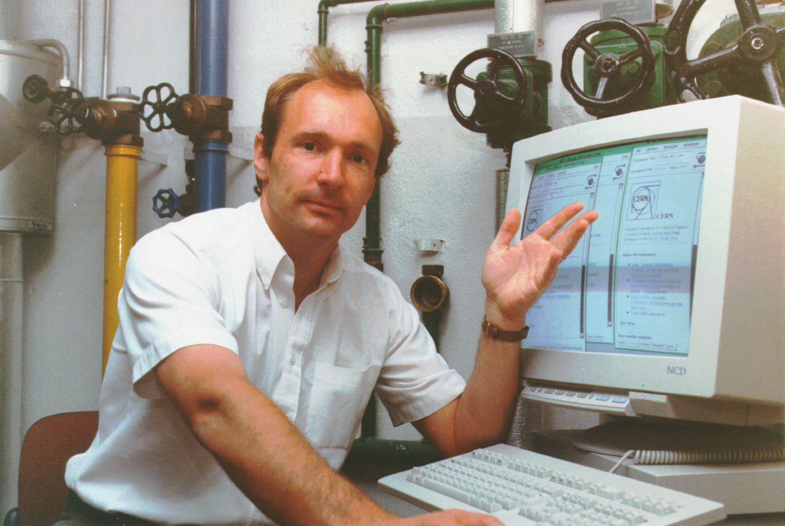

Vannevar Bush (1945) - As We May Think et le Memex
En19491945Vannevar Bush publie l'article As We May Think dans lequel le Memex, un dispositif imaginaires destiné à stocker , lier et retrouver rapidement des documents .

Document pédagogique long, détaillé et référencé présentant l’histoire conceptuelle et technique du World Wide Web (شبكة الويب العالمية ) , depuis les précurseurs intellectuels jusqu’aux projets de décentralisation et au Web sémantique. Il contient des contextes , des descriptions techniques , des auteurs clefs et des pistes pour l’avenir .
En19491945Vannevar Bush publie l'article As We May Think dans lequel le Memex, un dispositif imaginaires destiné à stocker , lier et retrouver rapidement des documents .
Dans les années 1960 , Ted Nelson formalise le terme hypertexte et propose le projet ambitieux Xanadu , qui vise à créer un système mondial de documents interconnectés.


Le projet Xamadu n'a jamais atteint une implémentation mondial , mais il définit des idées fortes : liens permanents, traçabilité des citations, granularité fine des références.Ces concepts reviendront plus tard dans les discussions sur l'archivage et la citation sur le Web.
Tim Berners-Lee propose au CERN, un système pour partager des documents entre chercheurs en utilisant hypertext et internet

Exemple d'un code HTML :
<p> hello world <p>
En 1991 la première page Web est mise en ligne. Berners-Lee publie des logiciels de serveur et de navigateur qui, même rudimentaires, permettent l'interconnexion de documents.
Le navigateur Mosaic (1993) popularise l'affichage graphique d'images et de textes mêlés ; il rend l'expérience Web utilisable par des non-spécialistes. Marc Andreessen, qui travaille sur Mosaic, fonde Netscape, dont le navigateur popularise l'accès grand public
Conséquences:
l'accessibilité et la convivialité des navigateurs déclenchent une croissance exponentielle du nombre de sites, d'utilisateurs et d'entreprises Web.
A mesure que le Web se répand, la nécessité de standars devient impérative . Le W3C est fondé (1994) par Berners-Lee pour promouvoir des standards ouverts (HTML, CSS, DOM, etc.). En parallèle, apparaissent les premiers moteurs de recherche et annuaires — Yahoo!, Lycos, Altavista — qui aident à découvrir du contenu
Les premiers problématique émergent : indexation performanance , sécurité , et modélisation des données sur le Web .